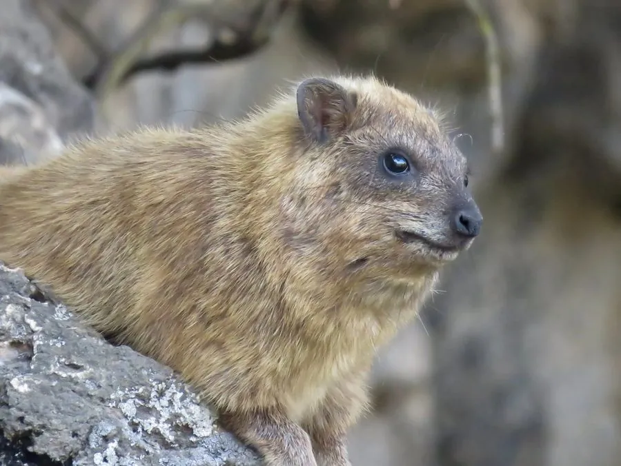

哺乳动物 · 动物界
蹄兔 Procavia capensis

外形像无尾大老鼠的岩栖哺乳动物，脚掌有弹性肉垫可攀岩，其实与大象、海牛亲缘最近，常成群晒着太阳发出叫声。
- 分类
- 门脊索动物门纲哺乳纲目蹄兔目科蹄兔科属蹄兔属
- 栖息环境
- 岩石山地、峡谷、花岗岩孤丘与岩缝密集的丘陵
- 地理分布
- 非洲南部与东部、东北非，以及中东的以色列、约旦、阿拉伯半岛
- 保护级别
- IUCN 无危（LC）
物种志
蹄兔体形粗壮，成年体长 40–55 厘米，体重 2–4.5 千克，几乎没有尾巴。毛被厚实，背毛灰褐至黄褐色，腹部浅黄，背部中央常有一块深色斑，斑下有一组腺体，受惊时会竖起毛露出颜色。头部短圆，耳小而圆，上唇裂开；四肢短粗，前足四趾、后足三趾，趾端有蹄状甲，脚掌有弹性肉垫，能像吸盘一样吸附在陡峭岩壁上。
蹄兔栖息于非洲与中东的岩石山地、峡谷和花岗岩孤丘，白天成群在岩石上晒太阳，清晨集体鸣叫，声音尖锐如哨。它们以草、树叶、嫩枝与树皮为食，能长时间不饮水，靠食物中的水分与浓缩尿液节约用水。群体由十余只至数十只组成，有哨兵在制高点警戒，发现猛禽或豹时发出不同警报声。每年繁殖一胎，孕期约 7–8 个月，每胎 1–4 仔。分子研究显示，蹄兔与大象、海牛同属非洲兽总目，亲缘关系出人意料地近。
形态与习性
- 体长约 40–55 cm，体重 2–4.5 kg，几乎无尾
- 食性草、树叶、嫩枝与树皮，可长时间不饮水
- 脚掌肉垫具弹性与腺体分泌物，可吸附岩壁攀爬
- 繁殖每年一胎，孕期约 7–8 个月，每胎 1–4 仔
- 社会结构十余至数十只群居，设哨兵在高处警戒
- 寿命约 10 年，饲养下可达 14 年
- 亲缘关系与大象、海牛同属非洲兽总目，亲缘较近
趣味知识
- 蹄兔长得像大老鼠，分子研究却表明它和大象、海牛是近亲。
- 它的脚掌像带纹路的橡胶吸盘，能贴着近乎垂直的岩壁奔跑。
- 群体清晨会齐声尖叫，哨兵发现猛禽时发出短促的警报。